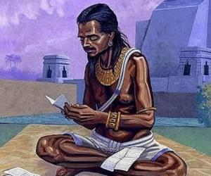
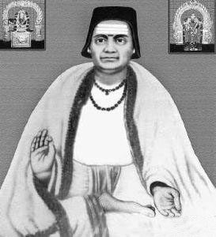
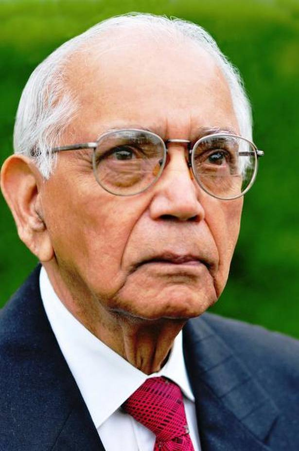

India is the land of some of the greatest minds. From Literature and Science stream to Art and Theatre, India has been a pioneer in all fields because of the exceptionally talented individuals who made the country proud. Mathematics, as a discipline, continues to be of utmost importance in the world and this blog explores some of the famous Indian mathematicians and their contribution to the world of mathematics. These mathematicians challenged the understanding of the world and left behind a legacy of breakthrough discovery and research. Let us explore these famous Indian Mathematicians who are still revered worldwide for their significant contributions!
Aryabhatta
Aryabhata was an excellent teacher with immense knowledge of ancient India. His extraordinary knowledge covered areas of Mathematics, Astronomy, and Science. He wrote a comprehensive treatise titled the “Aryabhatiya” which in its range covered various integral topics of mathematics like trigonometry and algebra. Aryabhata was the first to give an approximation of the value of pi and also the founder of the Number system.
Brahmagupta

Brahmagupta is world-renowned for his ingenious contribution to the fields of geometry and number system. His biggest contribution was his consideration of zero as a number which was the pathbreaking concept for the ancient world of mathematics. He established all the rules and norms of using zero which resulted in the development of the present form of the number system in mathematics. He worked out Brahmagupta’s theorem for cyclic quadrilaterals which was a major finding of his time.
Bhaskara

Bhaskara is a famous Indian mathematician from ancient times who is also a revered astronomer who made significant discoveries in both fields. He went deep into the number system and conceived easy formulas related to squaring and multiplication of numbers. Bhaskara laid the foundation of mathematics in India through his consequential work.
Srinivasa Ramanujan
Ramanujan is one of the greatest mathematical geniuses of India who worked with elliptic functions and the analytical theory of numbers. Ramanujan was the first Indian to be elected as a Fellow of Trinity College, Cambridge University. The mysteries solved by the man who knew infinity are still used to work for the development of the field of Mathematics.
P.C. Mahalanobis
Prasanta Chandra Mahalanobis is the Father of Indian Statistics. His contribution to statistics involves the introduction of the concept of the pilot and large-scale surveys have led him into the group of the greatest mathematicians in India. P.C Mahalanobis founded the Indian Institute of Statistical Science. For his unmatched contributions to Statistics as a major branch of Mathematics, 29th June is celebrated as National Statistics Day in his honour!
C.R. Rao

Calyampudi Radhakrishna Rao is the greatest mathematician who contributed to the fields of estimation theory, biometry, statistical inference, and functional equations. He aimed to put India on the global map in the field of Statistics. He helped bright students pursue their careers in the field of Statistics and continues to motivate them to discover the unexplored.